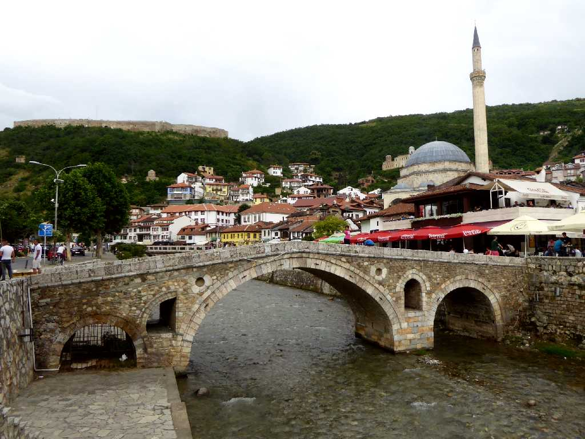
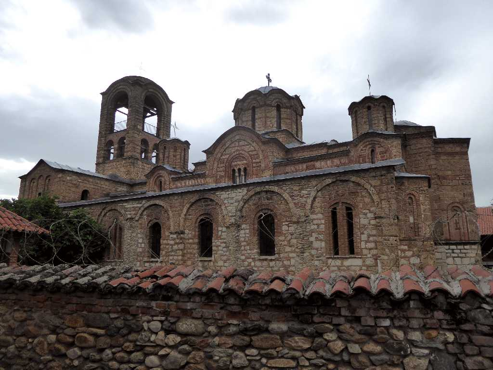
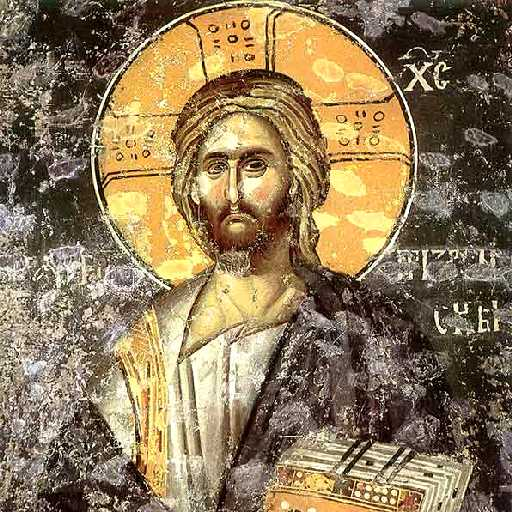
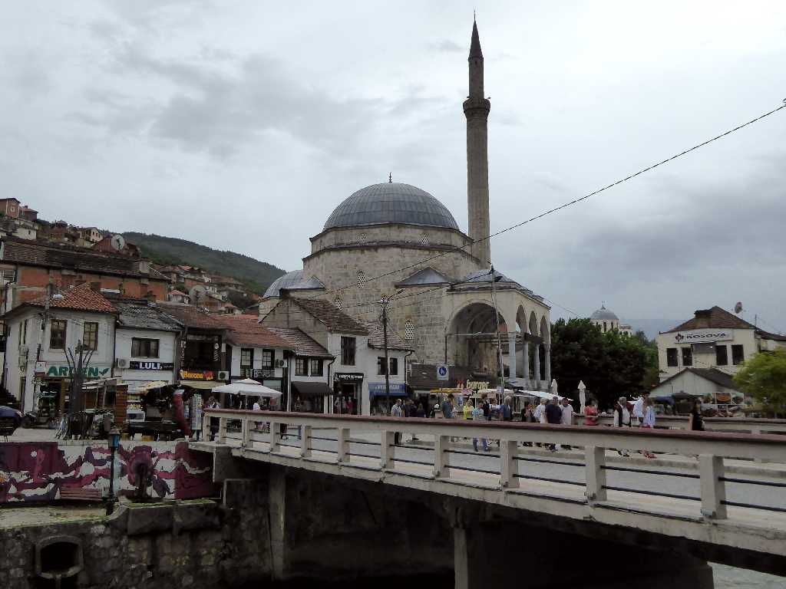
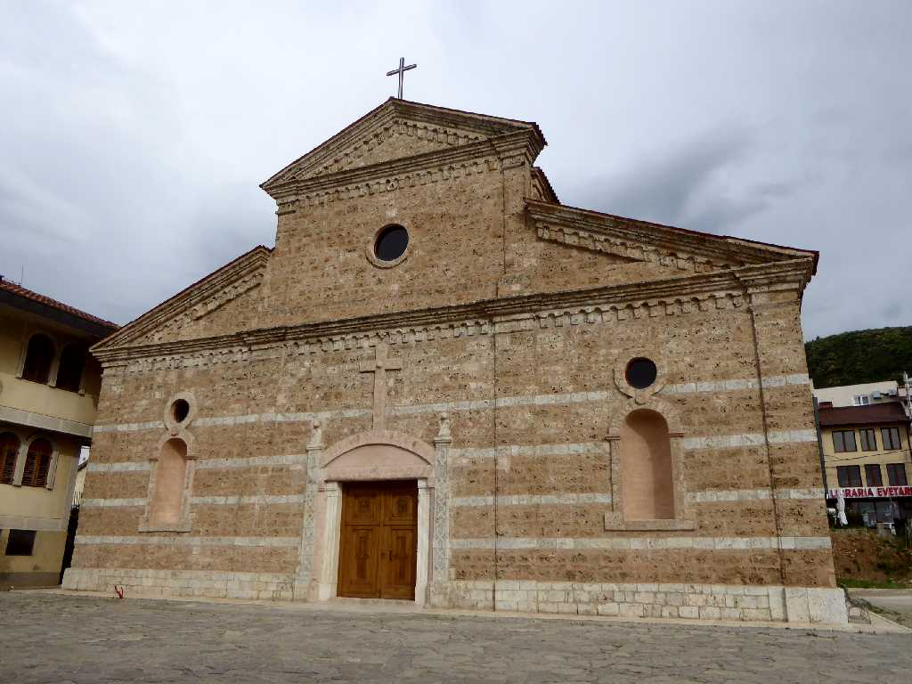
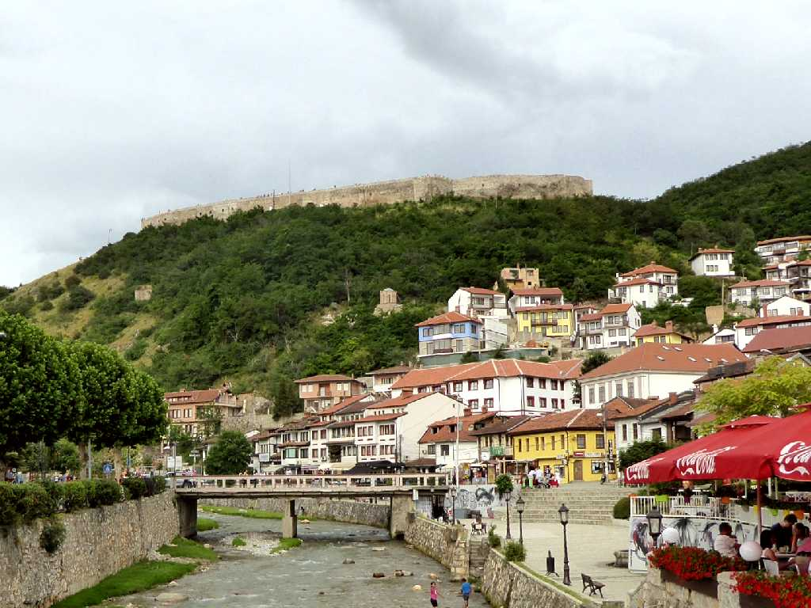
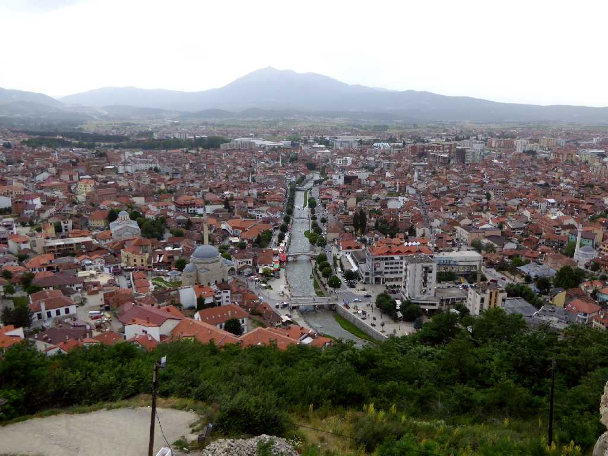
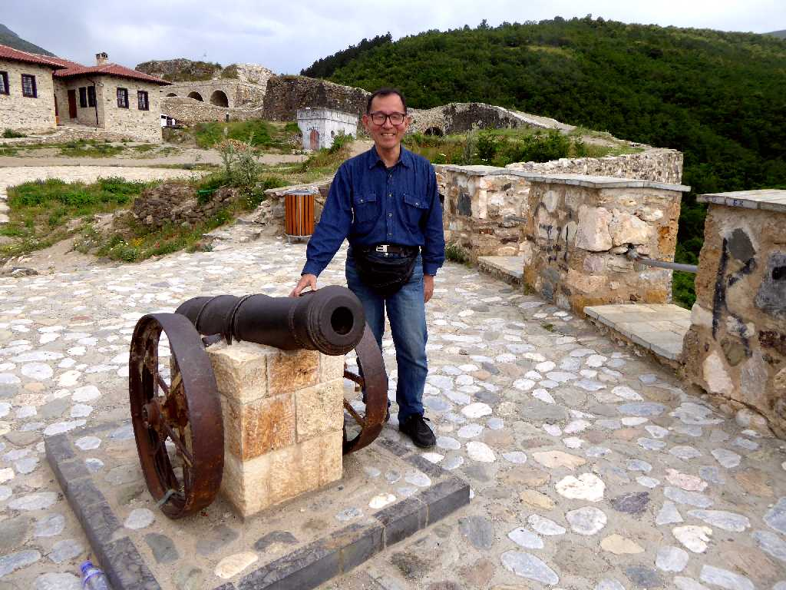
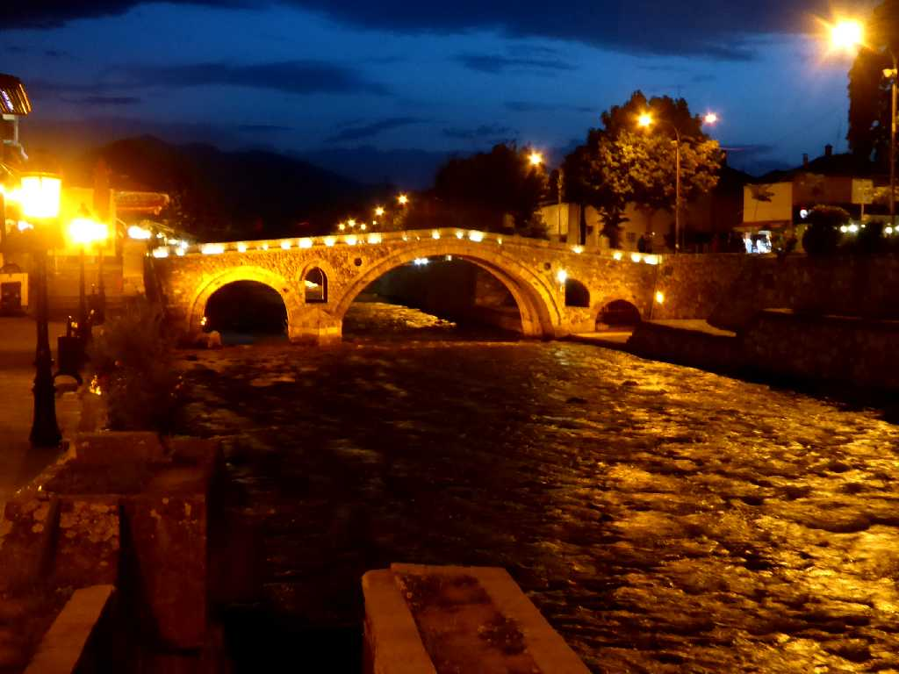

Prizren
アルバニア系住民が多く住むプリズレンの中心街

Bogorodica Ljeviška
１２世紀に創られたセルビア正教のリェヴィシャの生神女教会

Bogorodica Ljeviška

Mosque Prizren

Cathedral Prizren

Prizren Fortress

View from Prizren Fortress

June 19 2016 Prizren Fortress

Night View Bridge Prizren